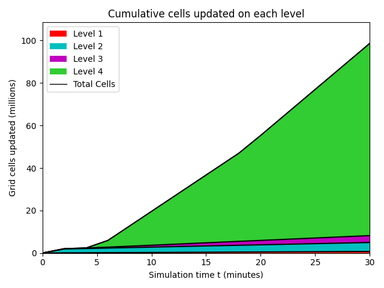
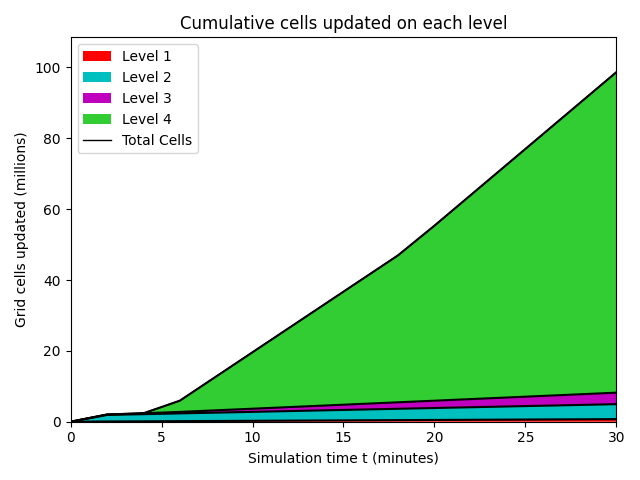
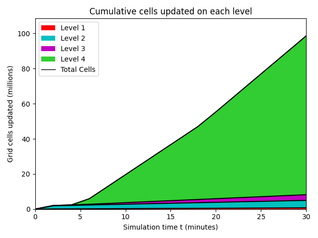
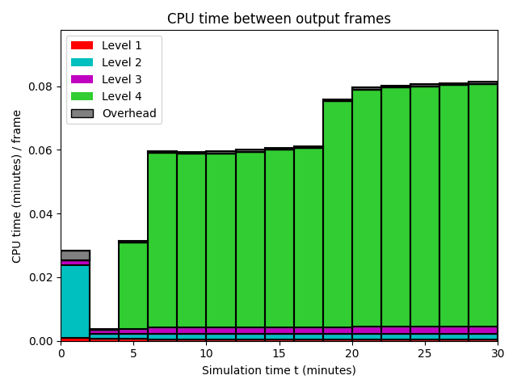
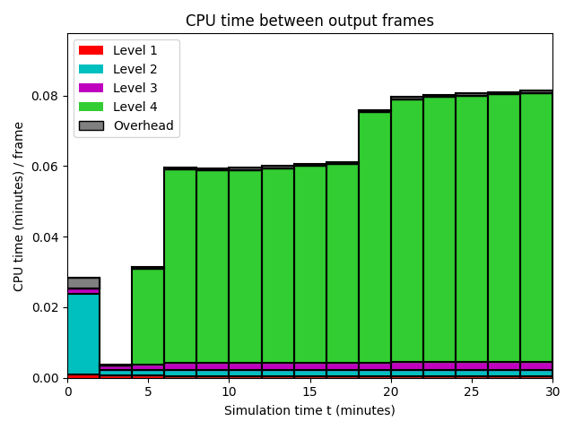

Datetime: 2020-04-18 12:35 From: /Users/rjl/clawpack_src/clawpack_master/geoclaw/examples/tsunami/eta_init_force_dry/_output
============================== Timing Data ==============================
Integration Time (stepgrid + BC + overhead)
Level Wall Time (seconds) CPU Time (seconds) Total Cell Updates
1 0.430 1.143 0.739E+06
2 1.141 2.346 0.212E+07
3 1.461 2.952 0.287E+07
4 29.836 84.458 0.885E+08
total 32.867 90.899 0.942E+08
All levels:
stepgrid 32.133 89.037
BC/ghost cells 0.696 1.817
Regridding 0.309 0.734
Output (valout) 0.069 0.064
Total time: 33.410 91.991
Using 3 thread(s)
Note: The CPU times are summed over all threads.
Total time includes more than the subroutines listed above
Note: timings are also recorded for each output step
in the file timing.csv.
clock_rate = 1000000000 per second, count_max = 9223372036854775807
clock_start = 1587238501158111000, clock_finish = 1587238534568330000
=========================================================================

 
